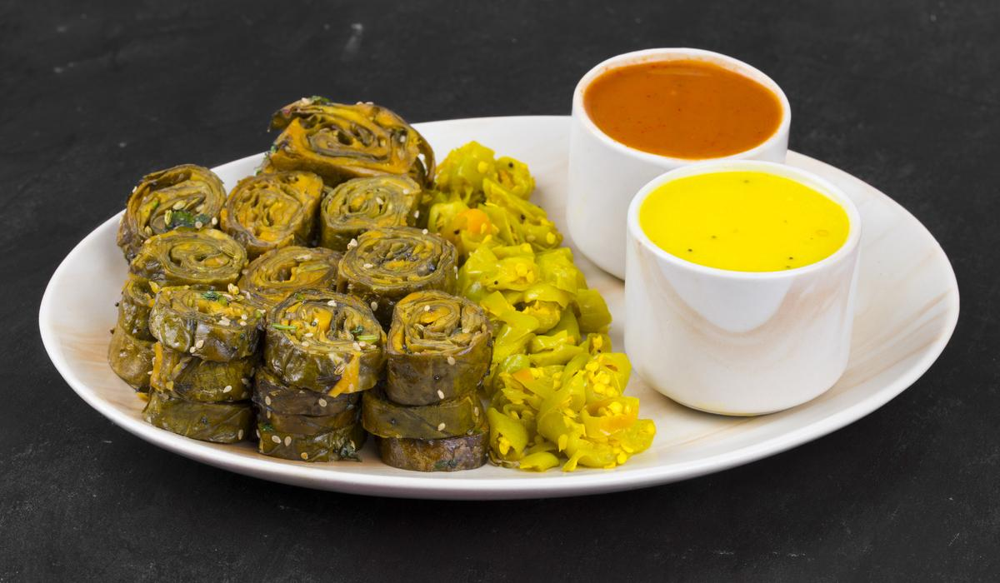

પાત્રા

વર્ણન
- તૈયારીનો સમય : 20 મિનિટ
- પકાવવાનો સમય: 20 મિનિટ
- કેટલા લોકો માટે: 2
વાનગી
- એક મોટા બાઉલમાં બેસન, આદુની પેસ્ટ, લીલા મરચાંની પેસ્ટ, લીંબુનો રસ, હળદર પાવડર, લાલ મરચું પાવડર,
- મીઠું અને હિંગ મિક્સ કરો.
- ઘટ્ટ બેટર બનાવવા માટે પૂરતું પાણી ઉમેરો. બેટર ચમચીની પાછળ કોટ કરી શકે તેટલું જાડું હોવું જોઈએ.
- સ્ટીમર ટોપલીને તેલથી ગ્રીસ કરો.
- સપાટ સપાટી પર કોલોકેસિયા પર્ણ મૂકો.
- પાંદડા પર ઉદાર માત્રામાં સખત મારપીટ ફેલાવો, તળિયે લગભગ 1 ઇંચ પાંદડાને ઢાંકેલું છોડી દો.
- પાંદડાને અડધા લંબાઈની દિશામાં ફોલ્ડ કરો અને પછી છેડાને કેન્દ્ર તરફ વાળો.
- બાકીના પાંદડા અને સખત મારપીટ સાથે પગલાં 4-6નું પુનરાવર્તન કરો.
- સ્ટીમર બાસ્કેટમાં ભરેલા પાંદડા મૂકો.
- પાત્રાને 15-20 મિનિટ માટે અથવા રાંધે ત્યાં સુધી વરાળ કરો.
- સ્ટીમરમાંથી પાત્રા કાઢીને સહેજ ઠંડુ થવા દો.
- પાત્રાને નાના-નાના ટુકડામાં કાપીને તલ અને કોથમીરથી સજાવીને ગરમ કે ઠંડુ સર્વ કરો.